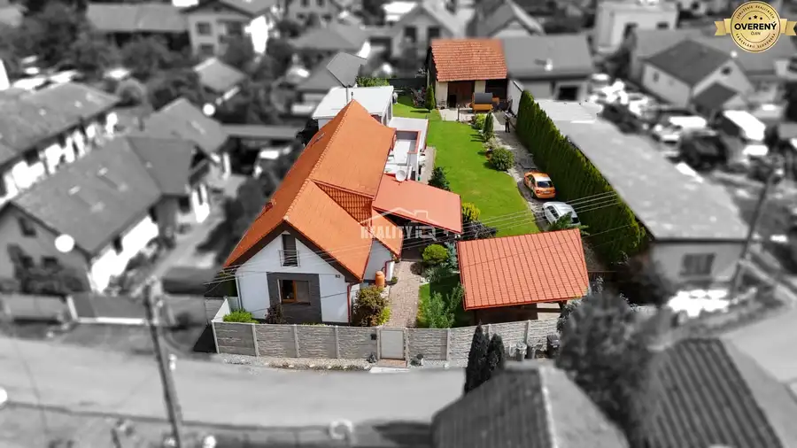
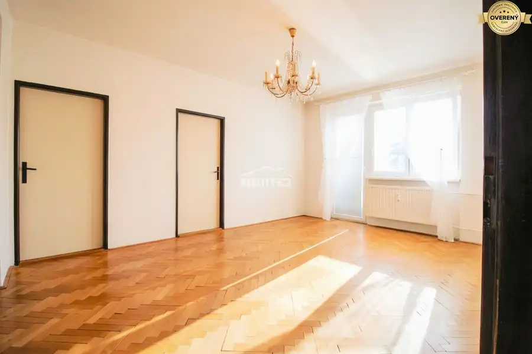

Exkluzívne / rodinný dom na predaj v obci Súľov
Súľov-Hradná
- Plocha160 m²
- Poschodie0. z 2
- Stavčiastočne prerobený
O nehnuteľnosti
Ponúkame na predaj priestranný 2-podlažný rodinný dom s dvoma samostatnými vchodmi v krásnej a pokojnej lokalite obce Súľov. Dom je vhodný pre veľkú rodinu alebo na viacgeneračné bývanie.
Dispozícia:
Hlavný vchod (2 podlažia):
Prvé podlažie: vstupná chodba, kuchyňa prepojená s obývačkou, jedna izba, kúpeľňa s vaňou a WC.
Druhé podlažie: 3 izby, kúpeľňa so sprchovým kútom a WC.
Druhý vchod (1 podlažie + podkrovie):
Jednopodlažná časť: kuchyňa, jedna izba, kúpeľňa so sprchovým kútom a WC.
Podkrovie: dodatočná izba vhodná napr. hosťovská.
Tretí vstup:
Pivnica a kotolňa.
Vybavenie a pozemok:
Kúrenie: kombinované – plynové a na tuhé palivo.
Pred domom aj ku každému vchodu dostupné parkovanie.
Na pozemku altánok a dostatok úložného priestoru.
Užitková plocha domu je cca 160 m², pozemok má 775 m².
Dom je udržiavaný a pripravený na nasťahovanie.
Lokalita:
Dom sa nachádza v tichej dedine, obklopenej krásnou prírodou, s výbornou dostupnosťou do okolitých miest a dobrým dopravným spojením. Ideálne miesto pre tých, ktorí hľadajú pokoj, súkromie a zároveň pohodlný prístup ku všetkým službám.
Kontakt:
Slavomíra Kubeková /
Parametre
| Rozloha pozemku | 775 m² |
|---|---|
| Zastavaná plocha | 110 m² |
| Úžitková plocha | 160 m² |
| Poschodie | prízemie |
| Počet poschodí | 2 |
| Stav | čiastočne prerobený |
| Voda | verejný vodovod |
| El. napätie | 230/400V |
| Plyn | áno |
| Kanalizácia | žumpa |
| Kúpeľňa | vaňa a sprchovací kút |
| Vykurovanie | vlastné – kombinované |
| Balkón | áno |
| Pivnica | áno |
| Garáž | nie |
| Parkovanie | vonkajšie |
| Postavené z | tehla |
| Energetický certifikát | nie |
| Terén | rovina |
| Dátum zverejnenia | 30. 1. 2026 |
Kde to je
Mohlo by Vás zaujímať

Rodinné domy10 599 000 €Exkluzívne na predaj – viacgeneračný rodinný dom v Žiline, časť Mojš Mojš 292 m² Reality IQ Vám exkluzívne ponúka na predaj výnimočný rodinný dom v obci Mojš, len pár minút od centra Žiliny. Táto nehnuteľnosť ponúka široké…
Byt10 116 600 €EXKLUZÍVNE: 3-izbový byt v Považskej Bystrici na predaj Považská Bystrica 3-izbový58 m² Ponúkame vám exkluzívne na predaj 3-izbový byt s výmerou 58 m² v tichej a vyhľadávanej lokalite: Považska Bystrica, ulica I. Krasku. Byt sa nachádza…